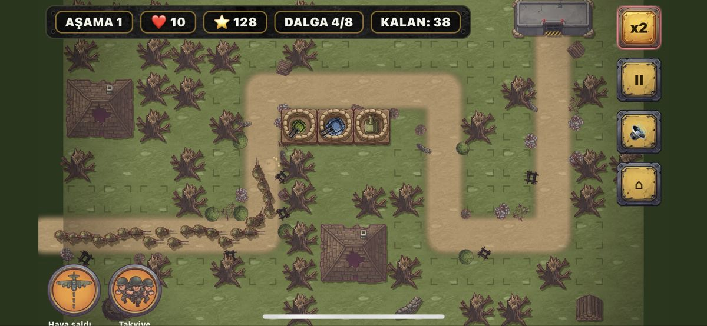
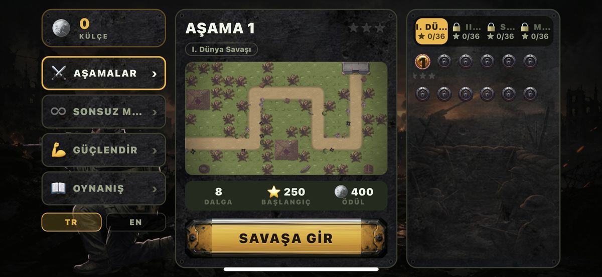

4 eras · 48 stages
4 çağ · 48 aşama
World War I, World War II, the Cold War and the modern era, each with its own enemies, maps and boss.
I. ve II. Dünya Savaşı, Soğuk Savaş ve Modern Çağ; her birinin kendi düşmanları, haritaları ve boss'u var.
17 weapons
17 silah
From machine guns and minefields to howitzers, anti-aircraft guns and drone stations.
Makineli tüfek ve mayından obüse, uçaksavara ve dron istasyonuna kadar.
Beach landings
Deniz çıkarmaları
Sink landing craft before they reach the shore and catch submarines when they surface.
Çıkarma botlarını kıyıya varmadan batır, denizaltıları yüzeye çıkınca yakala.
Your tactics
Senin taktiğin
Set target priorities, call airstrikes, drop reinforcements and play endless mode.
Hedef önceliği seç, hava saldırısı çağır, takviye indir, sonsuz modda rekor kır.


No ads. No internet connection needed. Available in English and Turkish.
Reklam yok. İnternet bağlantısı gerekmez. Türkçe ve İngilizce.